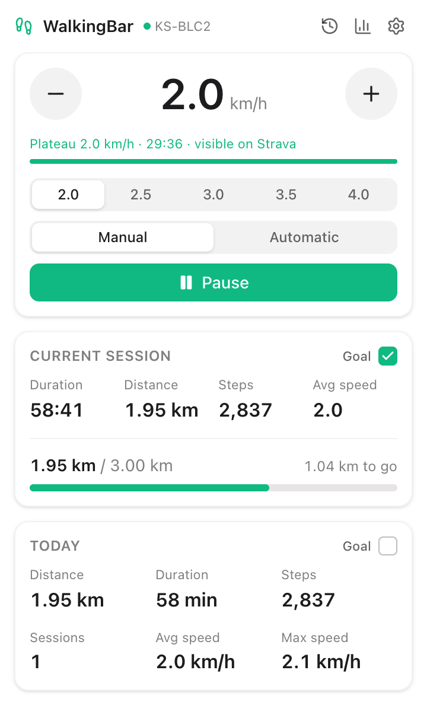

Control from the menu bar
Start, pause and change the speed without leaving what you are working on. The distance and time stay next to the icon.
WalkingBar drives your WalkingPad over Bluetooth, keeps every walk on your Mac and publishes them to Strava.
Free and open source, for macOS on Apple Silicon.

Start, pause and change the speed without leaving what you are working on. The distance and time stay next to the icon.
Pick up to six speeds and switch between them in one click, in manual or automatic mode.
Set a distance or time goal for the session and the day, and watch how much is left to go.
Every session is recorded on your Mac, with its speed chart, and summed up over 7 days, 30 days, 12 months or all time.
Publish one activity per day or per session, by hand or automatically. A plateau indicator tells you when a speed is held long enough to show on Strava.
Choose the accent color and the language: English, French, Spanish, Italian, German or Dutch.

You can also build it from source, with Node.js 24 and npm 11:
git clone https://github.com/cedricdelpoux/walkingpad-menu-bar.git
cd walkingpad-menu-bar
npm install
npm run distIt has been tested on a WalkingPad C2. Other KingSmith pads with the same Bluetooth service should work, and reports are welcome.